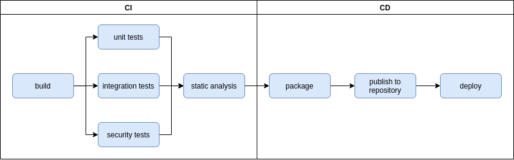
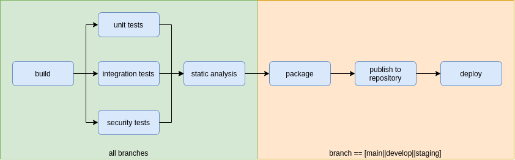
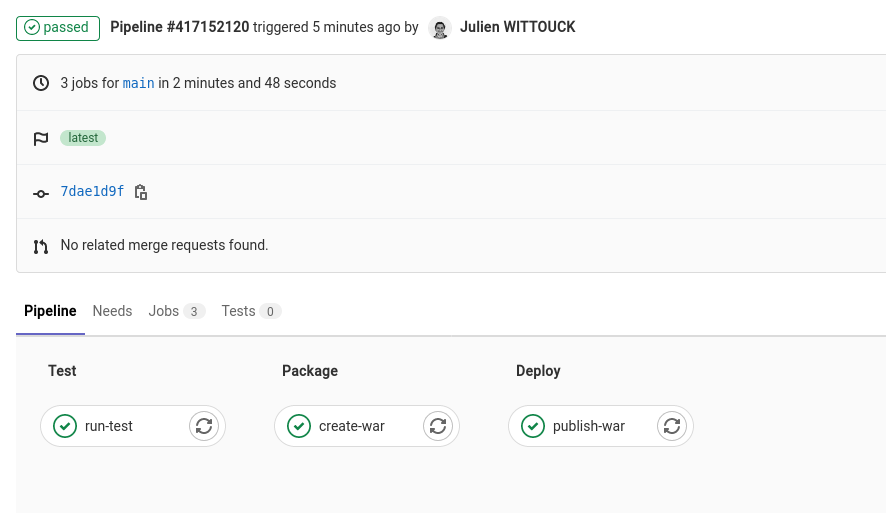
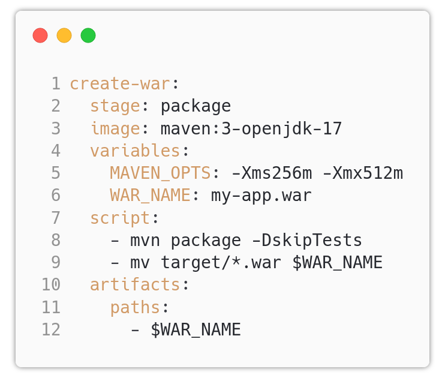
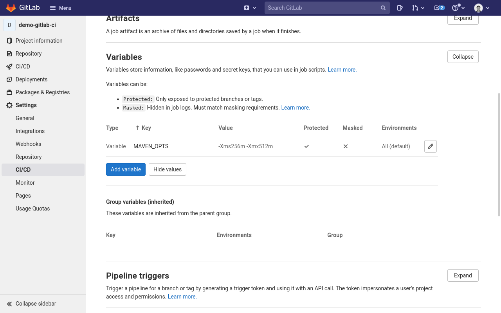
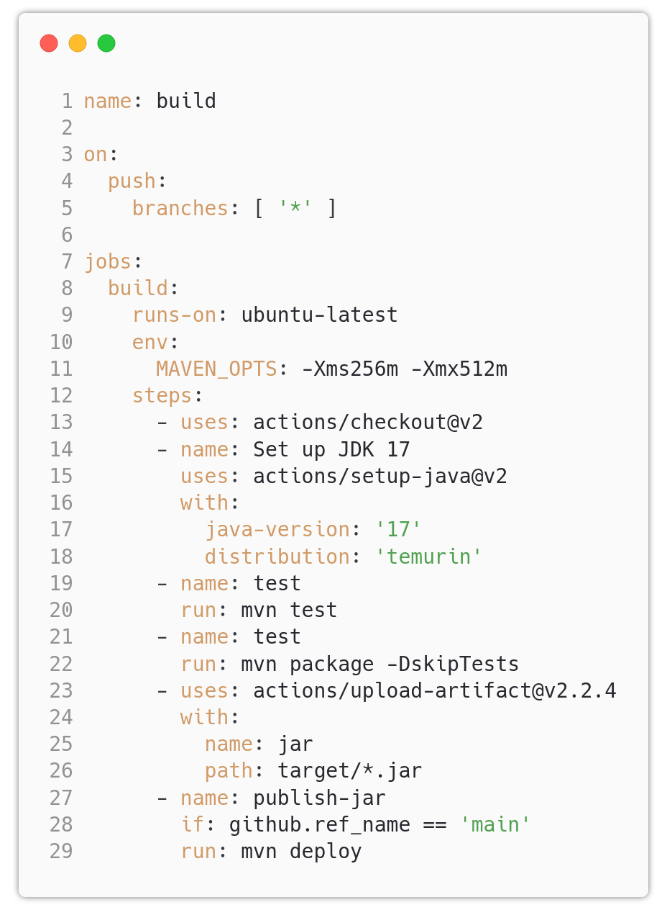

ALOM
⚙️ CI/CD
Problématiques
- 🔀 Comment intégrer le code des développeurs rapidement ?
- ✅ Valider la non-régression d'une application ?
- 📊 Suivre l'évolution de la qualité du code ?
- 🚀 Déployer automatiquement sur différents environnements ?
Continuous Integration (CI)
- intégration rapide du code des développeurs
- exécution des tests unitaires
- validation de la non régression du code
- suivi de l'évolution de la qualité du code
Continuous Deployment (or Continuous Delivery) (CD)
- production d'un livrable pour l'application
- mise à disposition sur un repository de binaire
- déploiement automatisé
- montée d'environnement en environnement
Vision globale
CI + CD
Notions communes aux plateformes
- Pipeline / Workflow : constitue l'ensemble des étapes d'une intégration continue
- Job : Une étape d'une intégration continue (ex: build, tests...)
- Artefact: Un objet produit par un job (code compilé, package). Pourra être téléchargé ou passé en paramètre à un autre job.
- Les pipelines / workflow sont exécutés sur toutes les branches du code
Branches & CI
💡
Le pipeline doit être adapté en fonction des pratiques de l'équipe de DEV
Chaque équipe a son modèle de gestion de branches (git flow, trunk based development...)
Chaque équipe a une maturité différente sur le déploiement (manuel, automatique en dev, continu en prod...)
Les outils
-
Proches du code
- Gitlab CI
- Github Actions
-
Externalisés
- Jenkins
- travis-ci
- CircleCI
Gitlab CI
Gitlab-CI
Gitlab CI est le produit d'intégration continue intégré à Gitlab.
Les pipelines sont décrits dans un fichier .gitlab-ci.yml
Les pipelines sont déclenchés par un push, tag, appel d'API, manuellement, ou programmés (cron)
Gitlab CI - Vocabulaire
- Le pipeline constitue l'ensemble des étapes d'une intégration continue.
- Un pipeline est découpé en stages successifs (ex: build, test, deploy).
- Un stage contient un ou plusieurs jobs.
- Un job est une action unitaire (ex: compilation, exécution des tests...), et contient un script shell.
- Les jobs d'un même stage sont exécutés en parallèle.
- Les job peuvent se passer des artefacts (ex: un jar compilé).
Gitlab CI
Gitlab CI - Techniquement
- Le Gitlab Runner est un composant en charge de l'exécution des jobs.
- Les jobs sont exécutés dans des containers docker.
- Le repository de code est cloné dans le container avant l'exécution du job.
- Des variables d'environnement sont injectées dans le container du job.
Anatomie d'un job Gitlab CI
Anatomie d'un pipeline
Configuration avec les variables d'environnement
Liens utiles
La référence pour le fichier .gitlab-ci.yml Des templates pour tous les langages Les variables prédéfiniesGithub Actions
Github Actions
Github Actions est le produit d'intégration continue intégré à Github.
Les workflows sont décrits dans des fichiers yml déposés dans le répertoire .github/workflows.
Les workflow sont déclenchés par des event.
un event peut être un push, tag, appel d'API, déclenchement manuel, ou programmés (cron), mais aussi, une nouvelle issue, un nouveau label sur une issue/pr, un commentaire dans une issue...
Github Actions - Vocabulaire
- Le workflow constitue l'ensemble des étapes d'une intégration continue.
- Un workflow est découpé en jobs.
- Un job est une suite de steps unitaire (ex: compilation, exécution des tests...).
- Une step est soit un script shell, soit une action.
- Une action est un bloc d'intégration continu réutilisable.
- Une marketplace permet de lister/publier des actions.
- Les jobs d'un même workflow sont exécutés en parallèle.
Github Actions - Les actions
Une action est un élément de workflow réutilisable
-
Ex:
- Récupération du code d'un repository
- Installation d'un langage/runtime
- Exécuter une compilation
- Sauvegarder/Télécharger un artefact
- Envoyer une notification Slack / Discord
Github Actions - Techniquement
- Le Runner est un composant en charge de l'exécution des jobs.
- Les jobs sont exécutés dans un environnement virtualisé (une VM).
- Les VM de runner contiennent un ensemble de librairies pré-installées, langages et outils. La liste pour ubuntu 20.04.
- Le repository de code n'est pas cloné avant l'exécution du job (il faut le faire avec une action).
Github Actions - Variables & Secrets
- Des variables d'environnement sont injectées dans la VM du workflow.
- Des secrets peuvent être configurés pour passer des paramètres (clés d'API...)
- Un secret
GITHUB_TOKENpour accéder à l'API Github est fourni par défaut.
Anatomie d'un job Github Actions

Une step
usespour importer une action existantewithpour lui passer des paramètresrunpour exécution un script shell
Anatomie d'un workflow
Liens utiles
La marketplace Les event qui peuvent lancer un workflow La syntaxe complèteTP